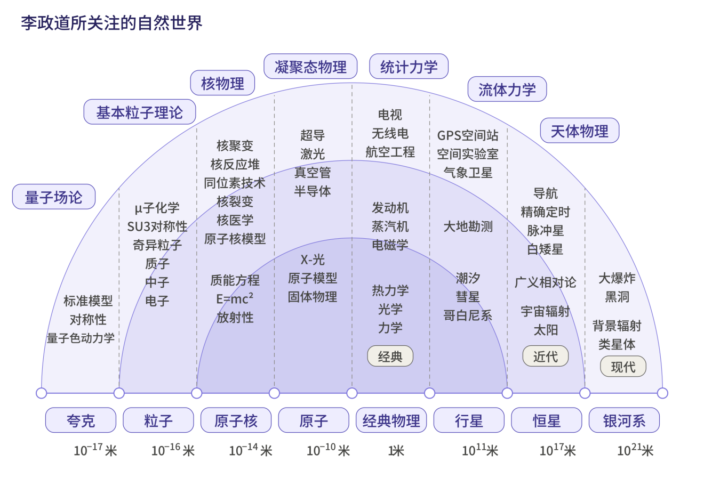
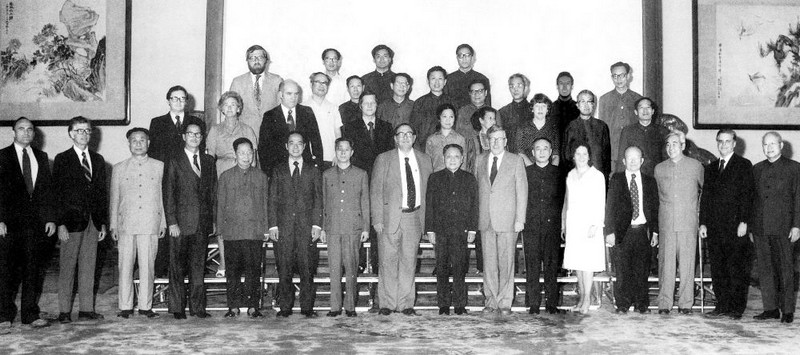
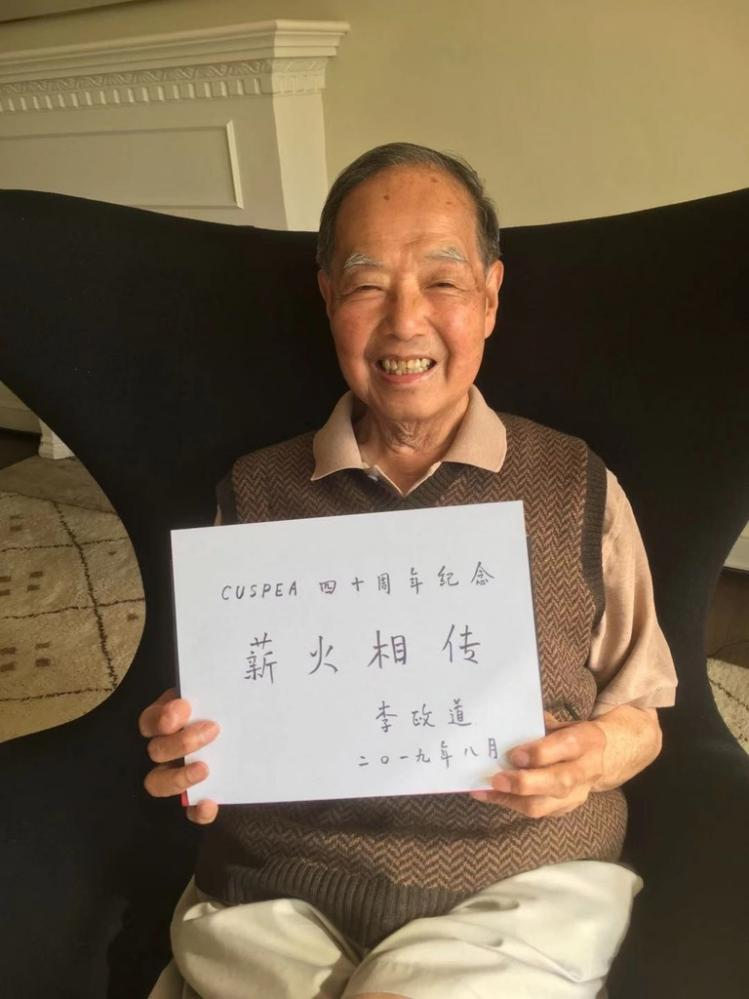

李政道百年：求索科学，跨域起舞
2026年11月24日，是物理学家李政道先生诞辰100周年。先生已于2024年8月4日离开了我们，但他留给科学、教育和文化的馈赠，仍在不断生长。回望他近百年的人生，我们看见一位在很多物理学领域创造历史性成就的科学家、一位桃李满天下的教育家、一位为东西方科学界架起桥梁的使者，以及一缕跨越科学与人文艺术的有趣且美好的灵魂……他如何取得这些成就，又为什么对培养学生倾注那么多心血？
细推物理行乐，跨域探索求真
李政道先生对自然界充满好奇心，科研活动涉猎极广，大至宇宙和星球、小至原子核和基本粒子；从经典力学、统计力学、流体力学，到凝聚态、核物理、量子场论，每一个领域都可以让优秀的科学家皓首穷经，他却自由地从一个领域游弋到另一个领域。图一展示了李政道曾涉及的科研领域，以下简略介绍他的几项理论成果。
李政道做研究生时，与马歇尔·罗森布鲁斯及杨振宁合作，研究介子与核子和轻粒子的相互作用，发现好几个衰变和捕获过程的耦合常数大致相同，于是认为存在同一种“中间波色子”，命名为“W”粒子（W即Weak–弱），把费米提出的β衰变由某种“弱力”导致的思路、提升到弱力是一种普适作用力，这也开启了李政道与弱力的一辈子缘分。他当年的博士生庞阳教授说，“李先生经历了人类对弱力的整个认知过程，包括弱力被发现、到宇称守恒破缺、再到有关弱力的各种理论建立和新现象的预测、以及大量实验验证”。
李政道完成于1949年的博士论文，把白矮星内部的有限温度、物质组成和能量产生机制联系起来研究，指出白矮星内部不可能含有大量氢，内部核反应也不足以维持其辐射，进一步深化了人们对白矮星结构和稳定性的理解。该论文获得了当年芝加哥大学的优秀论文奖，其主要研究结论直到现在仍然被科学界认可。
1951年，李政道发表了二维液体和三维液体湍流差异的研究结果，对气象预报等领域尤其有用。该论文得到著名数学家、计算机之父冯·诺伊曼的欣赏，他力主把李政道招进普林斯顿高等研究院，期望这位年轻人在新兴的计算科学领域施展才华。
1952年，李政道与杨振宁合作发表了两篇论文，用严格数学分析方法研究物态和相变，理论推导出不连续相变（气体-液体一级相变）的过程，被称为“李-杨定理”，至今仍然是统计和凝聚态物理的经典成果。爱因斯坦读后，特意把他们请去自己的办公室讨论其物理意义。
1954年，李政道的主要精力放在“李模型”的构建上。庞阳博士认为，“这个模型是场论中少有的可解模型，对之后的场论研究和重整化具有较大影响，重整化可通过此模型严格推导出来”。奥本海默、泡利和海森堡等理论物理学家都对“李模型”赞誉有加。
1955年，李政道的兴趣转向了θ-τ之谜。θ-τ是两个不同粒子、还是同一粒子？有些基本物理学常识和原理（比如宇称守恒）有问题吗？该年他与J. Orear合作发表文章做尝试性探讨。1956年4月初，第六届年度高能核物理大会在罗切斯特城举行，θ-τ之谜成为会上讨论的重要问题，科学家们提出了各种假说，但未形成共识。
罗切斯特会议之后，李政道立刻与哥伦比亚大学的同事、实验物理学家斯坦伯格教授讨论θ-τ现象及相关的宇称问题，并提出用赝标量思路来做理论梳理和实验设计。关键是考察自旋（内禀角动量）与运动方向的关联，以检验宇称。斯坦伯格团队按他的建议，测量Λ超子产生与衰变的角关联，研究自旋并寻找宇称不守恒的迹象，但统计证据不足。李政道很快又去找在β衰变领域实验经验丰富的吴健雄讨论。吴健雄立刻认识到之前的β衰变实验从未检验过宇称是否守恒，于是放下其它事投入实验中。
1956年6月，李政道与杨振宁完成了历史性论文“弱作用力下宇称是否守恒的问题”，指出已有的弱相互作用实验并未充分检验宇称是否守恒，并建议了几种检验实验。该文于1956年10月发表后，立刻在物理学圈引起震撼。1957年1月，他们又提交了“二分量中微子与宇称守恒的理论”一文，对宇称不守恒做出了明确的理论阐述和结论。同月，吴健雄团队完成了通过β衰变实验证实弱相互作用下宇称不守恒的论文。他们测量电子发射方向与钴60核自旋方向的关联，发现电子更多地逆着核自旋方向发出。这种赝标量关联显示弱相互作用能够区分左右。随即有近百个实验从不同角度确认宇称不守恒的结论。
弱力情况下宇称守恒破缺这项成果是石破惊天的。两位年轻的华人科学家以史上最快的速度获得物理学诺奖（1956年10月发表论文，1957年10月获奖），后续大量科学家沿着这个方向继续研究。而物理学家们受到的震撼更为直击人心，因为物理世界的一项准公理被推翻了。实验物理学家伊西多·拉比说：“一个相当完整的理论结构在基础上被粉碎了，我们不确定如何将这些碎片重新拼凑起来。”泡利在尚未得知实验结果时，曾在给物理学家魏斯科普夫的私人信件中写道：“我不相信上帝是一个弱左撇子”。但在大量实验结果和李杨二位先生的理论分析面前，骄傲的泡利也不得不认可。
美国理论物理学家、科普作家杰里米·伯恩斯坦讲述过一个故事：1958年春天的一个周六，他在普林斯顿高等研究院遇见李政道，问他是否考虑过超精细分裂对μ子原子的影响。李政道把他带到办公室，快速在黑板上演算。周一，伯恩斯坦发现信箱里已有一篇打印好的论文，署名伯恩斯坦、李政道、杨振宁和普里马科夫（H. Primakoff）。他惊呆了：自己仅仅问了一个问题，就成为第一作者！他说李政道此举非常慷慨，仅仅鸣谢他也符合科学界惯例。由于这篇文章，研究院决定再聘任伯恩斯坦一年。这个故事显示了李政道的科研伦理操守和大气的为人。
三十岁就站在科学巅峰的李政道，继续以“细推物理须行乐”的人生境界，听从好奇心做了很多重大而有趣的科研课题。如1964年与迈克尔·瑙恩伯格共同完成、构成KLN定理重要部分的工作，阐明了在适当条件下对简并态进行求和与平均时，质量奇异性和红外发散如何抵消，后来也成为量子色动力学喷注计算的重要理论依据。当谈及他为什么能够在这么多物理领域行走自如时，他的博士生、上海科技大学教授任海沧认为，“物理学最根本的原理其实只有几条，李先生对物理学精髓的理解非常深入、一通百通，专业之间的边界对他没有约束。”庞阳也说，李先生的研究都是从最基本的原理出发推导，因此没有不同物理领域的边界。
图一：李政道的科研领域（信息来源：上海交通大学李政道图书馆）。

纵横理论实验，延续费米神话
拉比称赞费米是世界上最后一位同时身兼理论家和实验家的物理全才。1953年秋天，拉比和同事们把年仅26岁的李政道招进哥伦比亚大学任助理教授之时，期待这位费米的学生也是通晓实验的理论物理学家。若干年后，拉比应该欣慰自己的确找到了费米的传人。
李政道的理论性工作，比如“弱作用力下宇称是否守恒的问题”，不仅包含对物理世界的洞察，提出的实验设想更是神来之笔。他与实验物理学家交往密切，就宇称问题，在半年多时间内鼓动了三组哥伦比亚大学同事从事相关实验，还推动了芝加哥大学及其他地方的科学家尽早参与。这种师承于费米先生的理论与实验密切结合的研究风格，犹如人的指纹独特而稳定，贯穿他的整个科研生涯。
1969至1974年，李政道和意大利理论物理学家维克（Gian Carlo Wick）教授合作研究真空稳定性和异常核物质的可能性，提出通过高能重离子碰撞探索新的物质状态。庞阳解释说，李-维克理论认为相对论重离子对撞可以改变真空特性，从而通过实验直接验证对称性破缺机制。之后，越来越多的物理学家投入该领域，逐渐发展成相对论重离子对撞（RHIC）物理学分枝。
李政道从1983年开始参与布鲁克海文国家实验室筹建相对论重离子对撞机的工作。建造大科学装置，科学理论与实验、工程、预算和人事等问题此起彼伏。美国加州大学洛杉矶分校黄焕中教授认为，李先生推动了以相对论重离子对撞探索真空特性和新物质态的研究，也是建造相对论重离子对撞机最重要的推动者之一。
1997年，日本理化学研究所与美国布鲁克海文国家实验室联合成立“RIKEN-BNL研究中心”，双方力推李政道成为创始主任。在他任内，相对论重离子对撞机建成，并于2000年投入实验。2005年，科学家们综合早期实验数据，宣布碰撞产生的极热、极高密度物质更像一种接近“完美液体”的夸克胶子等离子体，被认为是类似宇宙大爆炸后极短时间内产生的物态。这些研究对人类理解基础物理学、基本粒子和核物理、及宇宙起源等意义重大。
李政道积极推动该中心与中国科学界合作，在中国举办重离子对撞物理研讨会，邀请国内多家科研机构参与RHIC国际合作实验。从中心主任位置退下后，他仍长期关心支持其工作。RHIC于2026年2月完成最后一轮对撞，积累的数据仍将帮助科学家探索自然界最宏观和最微观的奥秘，相关设施则正向新一代电子—离子对撞机转型。
建造加速器也一直是中国科学家们的梦想。但由于科技和工程复杂、资金需求大，中国加速器的立项经历了几十年，所谓“七（次）下八（次）上”。1972年后，李政道等旅美科学家陆续回国交流，构建加速器的方案变得越来越具体和紧迫。
1979年初中美建交之际，也签订了“中美科技合作协议”，最初合作项目就落地在高能物理领域，中美高能物理联合委员会随即成立。李政道对协议的签订和执行起到了关键作用，并担任中美高能合作总顾问。在他参与推动合作的岁月里，每当出现问题，就会斡旋其中协助化险为夷。
1980年1月，广州粒子物理讨论会在广州从化召开。李政道承诺支持中国的加速器建设、并动员与会者支持中国建造加速器，他为这一声承诺压上自己声誉，在此后几十年持续投入心血、奔走协调。
1981年3月，中国科学家团队赴美，与李政道、袁家骝、吴健雄及斯坦福直线加速器中心主任潘诺夫斯基等慎重讨论后，一致认为建造2×22亿电子伏特正负电子对撞机是最好的方案：造价较低、物理窗口丰富，还可同时做同步辐射应用研究，实现“一机两用”。经过反复修改方案，工程于1984年10月破土动工，邓小平和李政道都参加了仪式。
建造加速器还需要大量工程技术专家。李政道借中美科技合作协议之力，动员美国好几家国家实验室的科技人员无偿支持中国加速器的设计和建设，还把中国高能科学家作为访问学者送往美国国家实验室定向培养。
1988年10月，北京正负电子对撞机正式投入运行，邓小平和李政道再次携手出席建成典礼。接下来，中美合作转向装置运行、实验设计及数据处理分析，后来又扩展到对撞机改造、上海同步辐射光源、大亚湾中微子实验等项目。至今，北京正负电子对撞机仍在不断取得科研成果，培养新一代科学家。
几十年合作涌现出一批一流骨干力量。李政道总是在解决最棘手的问题，中国同行们亲切地称他为“李政委”。他对工作质量要求很高、很严格，近距离工作的人既记得他的鼓励与表扬，也清晰记得自己曾受过的批评。
图二：1979年6月10日-13日，中美高能物理联合委员会第一次会议在北京召开，邓小平、方毅接见了中美高能物理联合委员会成员。（图片来源：中国科学院高能物理所网站）

这几十年中美科技合作还带来多项高技术副产品，“互联网进入中国”就是其中一项。早期拨号上网速度慢、费用高，只是个别人才能偶尔使用的“奢侈品”。
1988年秋，由CUSPEA项目赴美、长期在斯坦福直线加速器中心学习和工作的许榕生博士，经李政道推荐回到高能所，投入北京正负电子对撞机实验数据分析和软件编程的工作中。
1991年的中美高能物理合作会谈时，美国科学家提出建设国际计算机联网专线，以解决实验数据传输与通讯问题。李政道为此与中国领导人沟通，并与美国科学家一道游说美国政府，排除顾虑和障碍。两国政府同意后，许榕生成为中方技术负责人。
许榕生小组历时18个月工作后，从北京高能所到美国斯坦福直线加速器中心的计算机联网专线于1993年3月2日全程联通。在关键时刻，李政道总是帮助扫除观念和官僚障碍，推动电信部门支持。当时参与工程的邮电部门员工很诧异，经常接到高层“加快速度”的指示。
1994年4月20日，中国实现与国际互联网的全功能连接，同年5月，高能所率先建立中国第一个WWW网站。如果形容李政道是中国互联网发展史上的一个关键节点和一台连接中美的“路由器”，那么许榕生就是他构建并发送回祖国的一个能够自复制的“软件包”，快速克隆助力互联网大潮兴起。
科学使徒奔忙，架起科文桥梁
英国文学家斯诺于1959年演讲指出，人文和科学之间存在文化鸿沟。他以宇称不守恒的发现为例，赞叹其思维的美和原创性，期待这样的科学发现也能进入人文学者的讨论，为两种文化架起桥梁。
对称性是一种人类非常基本的审美原则，也是物理学家们构建理论不言而喻的准公理。弱相互作用打破了宇称对称性，不仅是惊世骇俗的科学新发现，也突破了普通人的审美常识，让世界呈现出更多迷人的可能性。
突破边界、为不同文化“架桥梁”，也是李政道很多社会活动的特点。
1986年，李政道和理论物理学家周光召发起成立“中国高等科学技术中心”（CCAST），分别担任正副主任。中心最初由中国政府和“世界实验室”共同资助，旨在创造具有世界水平和国际氛围、宽松而不受行政约束的研究环境，资助前沿研究，促进国内外交流。这种机构形态和运营模式在当时的中国是突破性的。
曾担任CCAST秘书长二十余年的柳怀祖先生回忆，中心经常邀请国外一线科学家举办研讨会，并向全国科学家开放。1998年，中心与美国加速器学校合作，聘请30位国际专家为一百多名国内学员强化培训，他们后来成为中国各科学大装置的技术骨干。
1993年5月8日，李政道在意大利埃里切会见教皇约翰·保罗二世，并作为科学界代表之一发言。这场会面延续了科学与宗教之间跨越数百年的对话。
为了感谢意大利政府和人民对科学合作的支持，李政道于2009年设计了一座伽利略铜像，以“中国高等科学技术中心”的名义捐赠给罗马圣玛丽亚天使与殉道者大教堂。今天，铜像仍矗立于该教堂，述说中意科学合作的故事，聆听后世佳话。
李政道对绘画情有独钟，他说：科学和艺术是一枚硬币的两面。他早期的画大都为夫人而作，特别是在夫人没有随行的出差途中，他画下美景，回家与夫人共赏，题写情深款款的话语。儿孙们的生日也可能收到特别的画作，享受独特的快乐。
徐依协是第一位CUSPEA女生，于1980年赴美进入哥伦比亚大学。在硅谷CUSPEA学者为李政道举办的追思会上，她哽咽着回忆收到李先生亲绘贺卡的惊喜：“那些年我多次搬家，甚至跨洋于硅谷和上海，李先生的贺卡一直追随着我的新地址，成为我每年十二月翘首盼望的那份最珍贵的圣诞惊喜。”包括笔者在内的很多人都有过类似感受，这是一颗心温暖另一颗心的瞬间。
李政道还请艺术家画出他想象的物理世界，或口述场景、或提供草图，先后与吴作人、李可染、黄胄、华君武、常沙娜、吴冠中等合作，创作出“相对论重离子碰撞”“对称乎”等物理题材画作。这些作品被用作物理期刊、会议论文集封面和海报，成为与会者的收藏品，有些被再创作为雕塑，伴随年轻一代科学家。
李政道善假于物、乐于把点连成线，用自己能够涉及的资源为科学活动提供方便，也为科学与人文艺术、科学与宗教之间架起桥梁。
教育大师报恩，薪火相传利人
李政道经常深情地向学生们说起三位老师如何改变他的人生——束星北是物理学启蒙老师，吴大猷提升了他对物理的理解并推荐他赴美，费米把他带进世界物理学前沿……因此他总希望在教育下一代方面做得更多、更好，既报答师恩，也把知识和善意传播开去。
1972年回国访问，李政道看见中国与世界在科学领域的距离，遇到大量如饥似渴的学者和学子，之后每次回国都在想着如何为他们做点什么。他强调加强基础理论教育和研究，说科学、技术和产品犹如水、鱼、鱼市场，三者缺一不可。他还建议从少年开始培养科技人才，这是中国科学技术大学于1978年开设“少年班”的支点。
1979年4月，李政道亲自来到中科院授课，在两个多月中开设“统计力学”与“场论简引和粒子物理”。参与听课的徐依协回忆，一千多名听众把科学院大礼堂挤得满满的，李先生每天连续讲三个多小时，周末和五一假期都不休息，课后耐心回答问题，中午还轮流请学生共进午餐。
这次授课后，李政道认识到两个月不可能让学生系统把握知识、了解科研前沿，于是先选拔学生赴美做研究生，又组织小型考试。徐依协和任海沧于1980年成为哥伦比亚大学研究生。这是“中美联合招收物理类研究生项目”（CUSPEA）的试点。
1980年1月初，我是中山大学二年级学生，听说李政道、杨振宁等科学家在广州从化开会，同学们兴奋地签署邀请信，请中山大学理论物理学家李华钟教授转交，邀请他们来校做报告，二位先生当即答应。
李政道来中山大学讲座时，讲台上为方便摄影安装了不少大灯。他上台后严厉地说：“灯光太亮了，都关了！我不是来表演的，是来给学生讲学的！”现场顿时鸦雀无声，坐在台下的我，听见了自己怦怦的心跳声。领导随即悄悄安排关了这些大灯。
当命运敲门的时候，人未必能听见，但其雷霆万钧将波及一个人的终生。笔者后来才知道，此时李政道在从化给方毅副总理写信，建议把CUSPEA项目正规化，扩大到中美几十所高校。CUSPEA项目就这样正规化了。
1981年9月，笔者作为大四学生参加CUSPEA考试并有幸被录取，于1982年赴美国卡内基梅隆大学攻读物理学博士。作为生长在湘西的孩子，如果不是李政道及很多中美前辈老师们无私引导，很难有机会走近科学前沿。
上海交通大学李政道图书馆收藏了大量往来信件，记录前辈们携手培育未来科技力量的努力。CUSPEA执行的十年间，李政道每年为此花1/3的时间，写了数千封信。据哥伦比亚大学的CUSPEA同学说，他家附近的邮筒经常信满为患，于是他和夫人秦惠䇹女士不得不推着小推车去更远的邮筒投递。
项目刚开始时，也有华裔教授写信反对由美国大学出题考中国学生，国内部分支持者开始拖延。柳怀祖先生说，李政道赶忙从美国飞到中国，最后邓小平拍板，让项目按他设计的方案继续进行。
从1979年到1988年，CUSPEA共送915位中国物理类学生赴北美读研究生，学费生活费由北美大学提供资助，估计当年总价值达一亿美元。中国科学技术大学教授张永德说，美国大学招生原本自主、多元，那段时间需要统一出卷选拔，实施难度可想而知，李先生只是一位教授，居然把项目从无到有建立起来，他的沟通与协调能力令人佩服。
其他领域的在美学者，如陈省身、吴瑞等，也参考CUSPEA组织中国学生赴美。据本文采访时的统计，CUSPEA学者中有16位成为中国和欧美主要国家院士，有数百位成功的高科技发明家和企业家。白春礼院士称其为改革开放早期人才交流的“破冰之举”。李政道自己的评价则是：“CUSPEA比我做宇称不守恒还有意义。”
在李政道倡导下，中国于1985年建立博士后制度；在他与国内科学界共同推动下，1986年成立国家自然科学基金委员会。这些科教制度建设对中国人才培养和科研水平的提升，意义重大、长远。
1998年，李政道及亲友正式设立“䇹政基金”，鼓励六所大学的本科生参与科研，二十多年培养了约六千“䇹政学者”。柳怀祖说，这是李夫人生前嘱托设立的，还特别嘱咐一半奖励名额留给女生。李政道在哥伦比亚大学的长期工作助理艾琳·赫尼根协助他做了大量工作，被称为“中国之友”，她把毕生储蓄捐给该基金，最后长眠于中国。
2010年，84岁的李政道最后一次访问祖国，与时任上海交通大学校长张杰数度“秉烛深谈”，决定捐赠手稿和家族珍藏，协助建立“李政道图书馆”和“李政道研究所”，鼓励年轻一代沿着他的科研轨迹继续前行。
2019年CUSPEA四十周年，李政道题词：“薪火相传”。笔者曾问他的长子李中清教授，李先生期待学者们如何“薪火相传”？回答是，他并不希望学者们对他个人报恩，而是以利他主义精神，把善意善举发扬光大，跨越时间纵向传承。犹如李中清在追思会上所说，所有受惠于李先生的人都是李先生人生的一部分，而李政道也永远是他们的一部分。
李政道近百年的人生是一场跨域起舞的传奇：他从一个科学高峰奔向另一个高峰，在理论与实验之间娴熟切换，在不同文化和国度之间架起桥梁，又为培养下一代呕心沥血。他不是神，只是一位大学教授，许多事都亲力亲为。支撑他走过这一切的，除了对物理本质的深刻理解，还有一份对人的善意。
百年诞辰之际，我们记得那些改变物理学的论文，也记得那些深夜写成的信、寄给学生和朋友的贺卡，以及他与夫人推着小车投递信件的身影。先生寄语学子：“薪火相传。”我们若能把这份善意继续传给下一代，让更多年轻人有机会追问、探索和创造，就是对他最好的纪念。
图三：李政道在板书展示β衰变及π—μ—e衰变链等弱相互作用过程。（拍摄者、时间和地点、及背景不详）。

图四：2019年8月，李政道先生为CUSPEA四十周年题写“薪火相传” （李善时摄于旧金山。此题词现由作者保存）。

图五：2019年8月，李政道先生为CUSPEA四十周年题写“科学属于全人类” （李善时摄于旧金山。此题词现由作者保存）。

图六：2016年11月，李政道先生手持CUSPEA学生们为他九十华诞而做的册子（王垂林摄于旧金山）。

（本文于2026年11月20日发表于《中国科学报》）